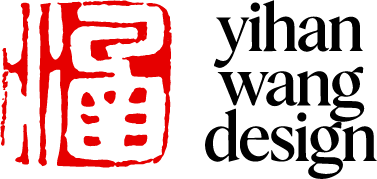

/* === 页面切换（纯 CSS 版，无需脚本） === */ /* 默认全部隐藏 */ .page { position: absolute; inset: 0; display: none; align-items: center; justify-content: center; background: #000; } /* 初始页：当没有 hash 时显示首页 */ #page-home { display: flex; } /* 点击导航时（匹配 :target）显示对应页 */ .page:target { display: flex !important; } /* 保证图片样式 */ .page img { width: 100%; height: 100%; object-fit: contain; object-position: center; background: #000; display: block; }

about
works
contact
© 2025 Yihan Wang Design. All rights reserved.
www.yihanwangdesign.com
© 2025 Yihan Wang Design. All rights reserved.
www.yihanwangdesign.com